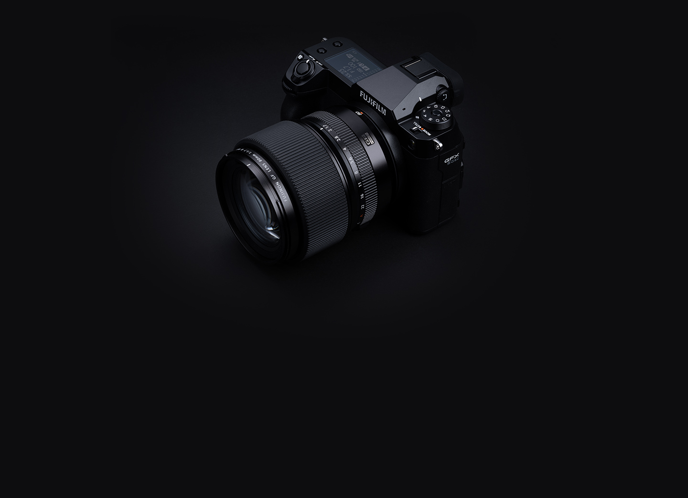
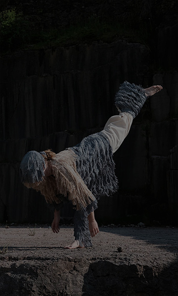
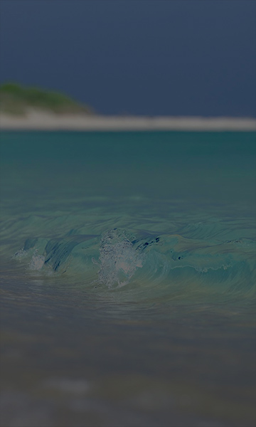
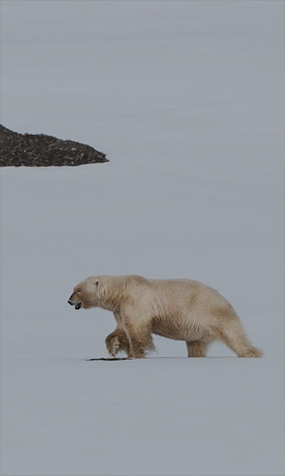
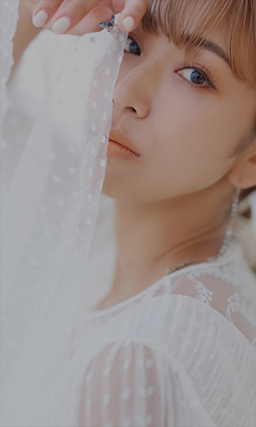

MORE THAN FULL FRAME
FUJIFILM GFX50S II
FUJIFILM GFX50S II

GFX50S II
라지포맷으로만 실현할 수 있는 새로운 차원의 묘사성능.
GFX50S II는 라지포맷의 상식을 또 한번 뒤집어,
표현을 추구하는 크리에이터들에게 새로운 가능성을 펼쳐보입니다.
자세히 보기
Sara Lando
처음부터 GFX50S II는 스튜디오에서만 사용하는 카메라가 아니라는 것을 알았습니다. 가벼울 뿐 아니라, 5축 6.5스탑 바디 내장형 손떨림보정 장치와 방진구조 덕분에 장비에 대해 걱정할 필요 없이 촬영할 수 있었습니다. 게다가, 중형카메라 촬영에서는 상상하기 어려웠던, 하루종일 손에 들고 촬영하는 것이 가능했죠.
자세히 보기
Junji Takasago
빠른 속도로 소비되는 사진의 세계와는 다르게 신중하게 즐길 수 있을것 같다는 기쁨에 가슴이 벅찼습니다. 세부까지 치밀하게 포착한 자연의 모든것을 커다랗게 확대해서, 손에 잡힐듯한 감각을 느끼게 해 주고 싶었습니다.
자세히 보기
Tommy Simonsen
후지필름의 GFX50S II를 처음 받았을 때, 저는 “바로 이거야!”라고 생각했습니다. 바로 제가 필요로하는 것이었죠. 필드에서 일을 쉽게 만들어주고, 최고의 품질을 제공합니다. 저는 정확한 자동 초점과 가벼운 시스템을 좋아하는데, 이 크기는 훌륭합니다. 10년 동안 현장에서 아날로그 펜탁스 6×7을 사용했기 때문에 중형카메라 시스템의 무게가 가진 의미를 잘 알고 있습니다.
자세히 보기
Seigi Takakuwa
라지포맷의 매력 중, 메인 피사체를 돋보이게 하는 아름다운 보케를 잊어서는 안됩니다. 부드럽고 아름다운 보케효과는 초점면에 시선을 유도하여 무엇을 보여주고 싶은지 의도를 전달하기가 수월합니다.
자세히 보기